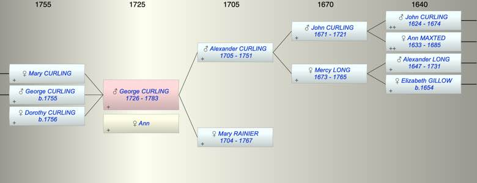

| [Index] |
| George CURLING (1726 - 1783) |
|  |
| b. 1726 at St Laurence |
| +. Ann |
| d. 1783 at Whitechapel aged 57 |
| Parents: |
| Alexander CURLING (1705 - 1751) |
| Mary RAINIER (1704 - 1767) |
| Siblings (6): |
| Mercy CURLING (1728 - 1752) |
| Daniel CURLING (1729 - 1782) |
| Alexander CURLING (1731 - 1732) |
| Mary CURLING (1733 - 1750) |
| Ann CURLING (1736 - ) |
| Alexander CURLING (1740 - ) |
| Children (3): |
| Mary CURLING |
| George CURLING (1755 - ) |
| Dorothy CURLING (1756 - ) |
| Grandchildren (4): |
| Mary GIBSON ( - 1823), George CURLING (1781 - ), Ann CURLING (1784 - ), Sarah CURLING (1784 - ) |
| Events in George CURLING (1726 - 1783)'s life | |||||
| Date | Age | Event | Place | Notes | Src |
| 1726 | George CURLING was born | St Laurence | Note 1 | ||
| abt 1751 | 25 | Death of father Alexander CURLING (aged 46) | |||
| 1755 | 29 | Birth of son George CURLING | Stockton, Durham | Note 2 | |
| 1756 | 30 | Birth of daughter Dorothy CURLING | Stockton, Durham | Note 3 | |
| 26 Aug 1767 | 41 | Death of mother Mary RAINIER (aged 63) | Note 4 | ||
| 1783 | 57 | George CURLING died | Whitechapel | Note 5 | |
| Personal Notes: |
|
Of London and Essex, purchased West Hatch in 1781
WiIl of George Curling PROB 11/1100 Made 31 Mar 1782, Will proved with codicils 17 Feb 1783 George Curling of Prescot Street, Goodmans Fields, Middlesex - Having given my daughter Dorothy sixteen hundred pounds on her marriage with Mr. George Mordaunt and having given my son George Curling sixteen hundred Pounds on his marriage with Dorothy Wilkinson, it is my will and I give to my daughter Mary Curling sixteen hundred Pounds that they may be all three on equal terms. - To my late servant Mary Walker one thousand Pounds, and to her six children that she has by me viz: William Walker, James Walker, Edward Walker, Charlotte Walker, John Walker and George Walker, I give one thousand Pounds each. Mary Walker is not to charge any of her sons as above named for board, lodging, cloaths or education before they arrive to the age of fourteen years and then it’s my desire that they be put out apprentice to a good trade unless any of them choose to go to sea, - After the said Mary Walker’s death such share or shares of the children that may die as above shall be equally divided between my son George Curling, my daughter Dorothy Mordaunt and my daughter Mary Curling or their heirs. - Mary Walker not to charge her daughter Charlotte for her maintenance, lodging, cloaths or education until she arrive to the age of twenty one years - My son George Curling and my brother John Wilkinson to be executors Witnesses Ann Mackaness, William Perry and John Neale Codicil 1st To avoid dispute and to explain the full and true meaning relating to the six children Mary Walker has by me and go by her name viz: the eldest William Walker was born at Darlington, Durham and baptised there by the name of William Walker son of Mary Walker. James Walker, Edward Walker, John Walker, Charlotte Walker and George Walker were born at Mile End Old, Stepney and baptised at home and registered by the name of Curling, children of George and Mary Curling. It is to be fully understood that I desire my Will to be truly and faithfully observed and that no advantage shall be taken of the above named children by their being registered in the Parish Books by my name and go by their mother’s. dated 20 Apr 1782 Codicil 2nd Mary Walker, my late servant having had another boy by me since the making my Will and Testament and has called him Daniel. I make him equal with the rest of her children and therefore he has one thousand Pounds given on the same terms and conditions as the rest of Mary Walker’s children. If Daniel Walker should die before he attains to the full age of twenty one years then the one thousand Pounds to be equally divided between George Curling, Dorothy Mordaunt and Mary Curling, my children. And it is my further will that Mary Walker be paid the full interest of her own and childrens money the first year after my decease over and above the one hundred Pounds which I meant for mourning for herself and family. And I give and bequeath to each of my household servants five Pounds apiece mourning and the same to James Wilson, Gardener at West Hatch. Dated 2 Feb. 1783 His will establishes that his son WIlliam (Walker) was born Darlington, Durham and this fits with the baptism of his son George and daughter Dorothy both at Stockton, Durham. |
| Created on a Mac™ using iFamily for Mac™ on 8 Oct 2023 |